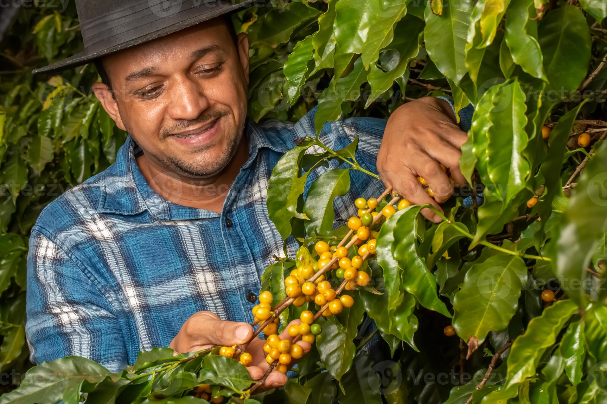

Sobre Nosotros
En Café del Bueno, nuestra pasión es simple: ofrecerte la mejor experiencia de café posible. Desde la selección cuidadosa de los granos en las fincas más prestigiosas hasta el tueste artesanal que resalta cada matiz de sabor, nos dedicamos a la excelencia en cada paso.
Creemos que una buena taza de café puede transformar tu día, y es por eso que nos esforzamos por llevarte solo lo mejor. Conoce a nuestro equipo de baristas expertos y descubre las historias detrás de cada uno de nuestros cafés de especialidad.
